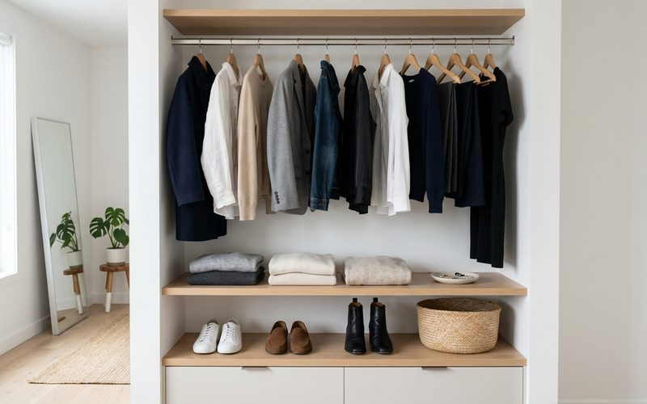

Há uma paradoxo no coração do guarda-roupa feminino contemporâneo: quanto mais roupas uma pessoa tem, mais frequentemente ela sente que não tem nada para vestir. Essa experiência é quase universal, e revela algo importante sobre a diferença entre quantidade e qualidade, entre acumular e curar. A mulher moderna, nesse sentido, está descobrindo uma verdade antiga: menos peças, escolhidas com intenção, constroem mais estilo do que um armário transbordante de escolhas sem critério.
Esse é o princípio por trás do guarda-roupa minimalista, e é também o princípio que norteia a curadoria de um brechó como o Outra Vez. Cada peça que entra no nosso espaço foi avaliada por critérios claros de qualidade, estado e potencial de uso. É essa seleção prévia que facilita o processo de quem garimpa: em vez de vasculhar centenas de peças indiferenciadas, você encontra um conjunto curado onde cada item tem razão de estar ali.
O guarda-roupa editado libera tempo e energia mental. Pesquisas de psicologia do consumo indicam que um número excessivo de opções dificulta a tomada de decisão, o que explica por que pessoas com muitas roupas frequentemente sentem bloqueio na hora de se vestir. Quando o armário tem menos peças, mas todas bem escolhidas, o processo de montar um look se torna mais intuitivo, mais rápido e mais satisfatório.
Há também um benefício emocional: quando você sabe que tudo no seu armário foi escolhido com cuidado, que cada peça tem qualidade e que você realmente usa, abrir o armário de manhã se torna um momento de prazer em vez de frustração. Esse bem-estar sutil no início do dia não é trivial, ele compõe a qualidade da sua experiência cotidiana.
O processo começa pela edição do que já existe. Consigne o que não usa mais, e use esse retorno para financiar as novas aquisições. Então, garimpe com intenção: identifique as lacunas reais do seu guarda-roupa antes de ir ao brechó, e procure peças que preencham essas lacunas com qualidade. Uma boa peça de brechó vale dez peças medianas de fast fashion, e ocupa o mesmo espaço com muito mais dignidade.
A mulher moderna que tem menos peças e mais estilo não é a que tem mais dinheiro para gastar, é a que tem mais clareza sobre o que quer vestir e por quê. E essa clareza, uma vez conquistada, transforma não apenas o guarda-roupa, mas a relação com a própria imagem: mais confiante, mais coerente, mais genuinamente sua.